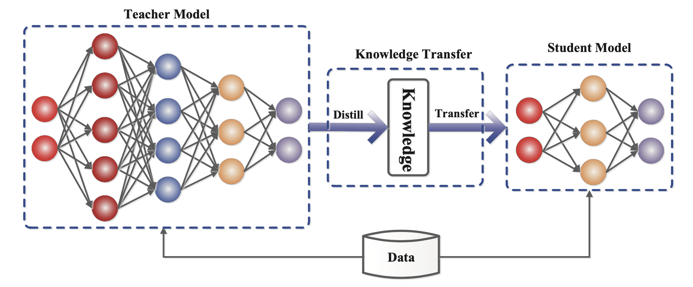
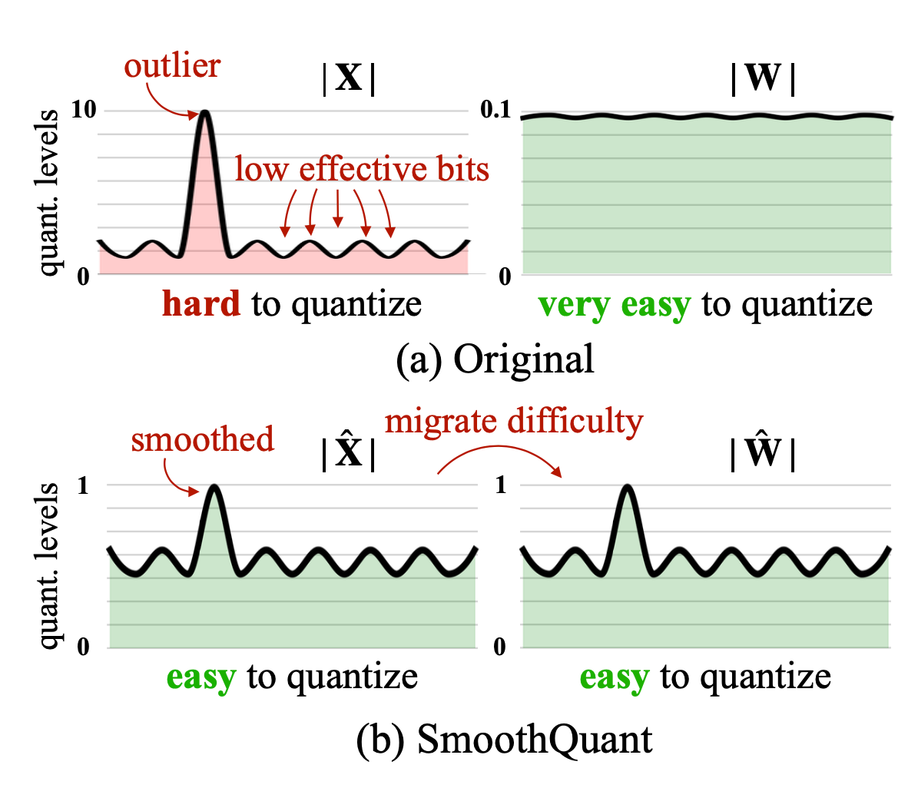
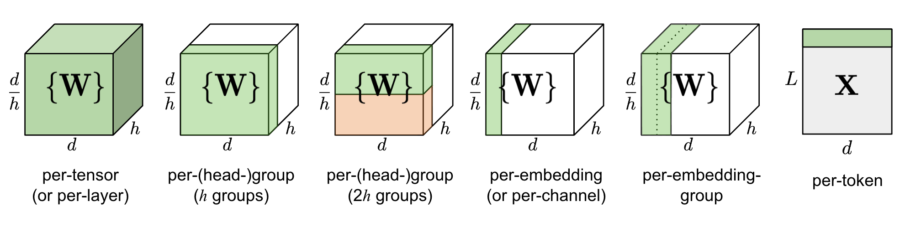
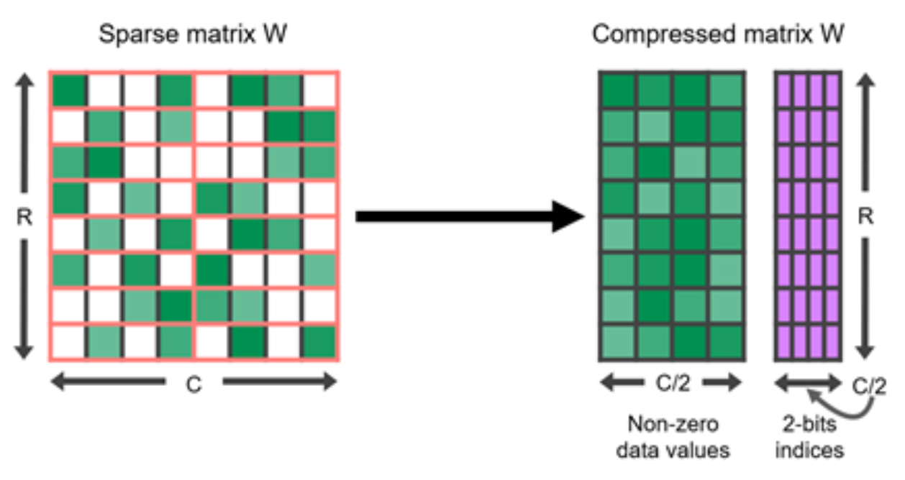
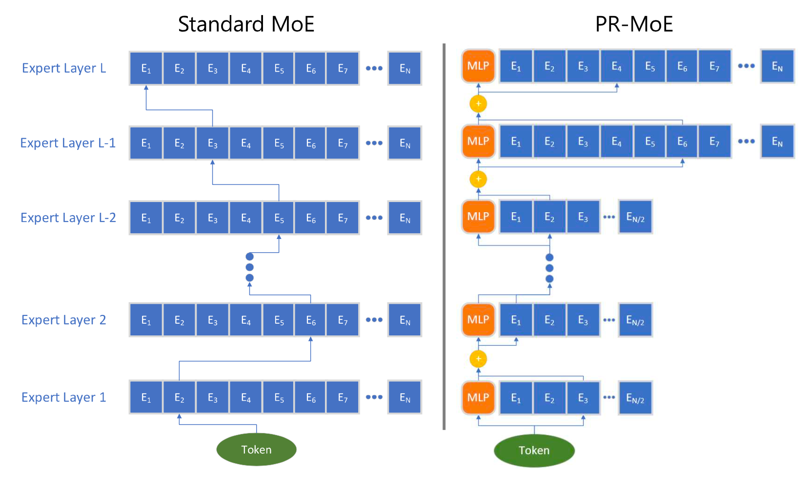
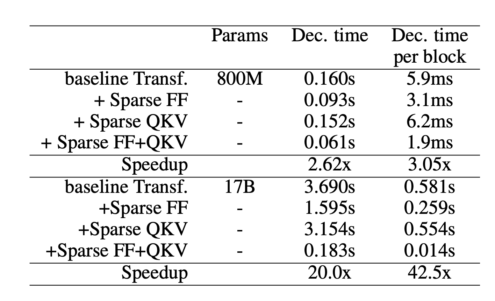

Large Transformer Model Inference Optimization
- The inference bottleneck
- Distillation
- Quantization
- Structured sparsity and pruning
- Mixture-of-Experts
- Architectural optimization
- Practical synthesis
1. The inference bottleneck
Large transformer inference is constrained by memory bandwidth, activation movement, attention cost, and the need to serve many tokens at low latency. Optimization methods reduce cost by compressing models, lowering numerical precision, skipping computation, or changing the architecture.
2. Distillation
Distillation trains a smaller student model to imitate a larger teacher. It is conceptually simple and broadly applicable, but the student must preserve enough capability for the target task and deployment setting.

3. Quantization
Quantization reduces memory and compute by representing weights or activations with fewer bits. Transformer quantization is difficult because outliers in activations and attention layers can dominate error. Methods such as LLM.int8 and SmoothQuant handle these outliers while preserving model quality.



4. Structured sparsity and pruning
Pruning removes parameters or computation judged to be less important. Unstructured sparsity is hard to accelerate on common hardware, so structured patterns such as N:M sparsity are often more useful for inference.

5. Mixture-of-Experts
Mixture-of-Experts increases model capacity without activating all parameters for every token. Routing selects a small subset of experts, trading dense compute for routing complexity, load balancing, and communication overhead.

6. Architectural optimization
Architectural methods target the cost structure of transformers directly: sparse attention, recurrence, memory-saving attention variants, and adaptive computation can reduce the per-token cost or the effective sequence length.

7. Practical synthesis
Inference optimization is usually a stack rather than a single method: quantization for memory bandwidth, batching and kernels for throughput, distillation or pruning for smaller deployments, and architecture changes when the model family can be redesigned.

References
- Hinton et al. (2014). Distilling the Knowledge in a Neural Network.
- Sanh et al. (2019). DistilBERT, a distilled version of BERT.
- Dettmers et al. (2022). LLM.int8(): 8-bit Matrix Multiplication for Transformers at Scale.
- Xiao and Lin (2022). SmoothQuant.
- Frantar et al. (2022). GPTQ: Accurate Quantization for Generative Pre-trained Transformers.
- Zhu and Gupta (2017). To Prune, or Not to Prune.
- Fedus et al. (2022). A Review of Sparse Expert Models in Deep Learning.
- Tay et al. (2022). Efficient Transformers: A Survey.